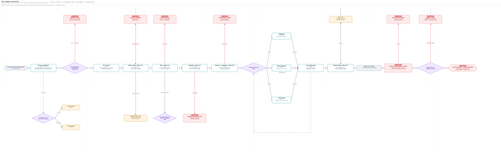

01 — Overview
A shared bank for couples.
This is a concept project: a bank for couples who share their finances. I didn't design the whole application — I designed one flow, the shared setup: the couple decides what each partner contributes, which bills the shared pot covers, how spending is split into cards, and what they're saving for. It's the flow where all the real decisions live, so it's where the design problem is.
The process, briefly: desk research first, distilled into five constraints that guided the design decisions. Then flow explorations and lo-fi wireframes, a coded prototype, and a moderated usability test. Only after that came the visual identity and the final coded UI — which is embedded further down, live.
02 — Research
Five constraints I designed against.
I started by writing research questions to organise the research, aiming to cover every aspect of the product: how do couples actually organise their money — what's shared, what's kept separate? What happens when incomes are unequal? Why do money fights start, and what are they really about? What makes saving together work?
With those questions set, I did a round of desk research — existing studies on couples and money, plus the behavioural economics behind spending and saving. From the findings I distilled five constraints. Not hard rules, but things I kept with me throughout the project — they guided the product decisions from here on.
- 01Boundary. Couples want partial transparency, not full. What's shared is visible to both; what's personal stays private. So nothing is ever defaulted into the shared layer — every shared item is an active choice.
- 02Fairness. The harm from unequal income isn't the gap, it's the unspoken meaning. Contribution has to be explicit, agreed, and proportional to income — never an assumed 50/50. This is the product's sharpest differentiator: the Icelandic incumbent only offers 50/50.
- 03Mental load. The partner who manages the money carries stress nobody consciously handed them. Automate the execution, and surface decisions as shared, so the admin is distributed rather than dumped on one person.
- 04Goals. Shared goals motivate more than private ones, and visible progress sustains them. Saving has to feel motivating, not like filling in a form — named pots, a picture of what you're saving toward, progress both partners can see.
- 05Couple-first. Every existing tool treats a couple as two individuals. Here the shared pot is the primary concept and setup is a joint act — neither partner's experience is the secondary one.
03 — Finding the flow
Finding the flow.
In this phase I needed to finalise the base task flow first, then move on to the detail — what belongs on each screen. For this I used Claude Code and Paper design. It was a really enjoyable workflow: I could brainstorm different ideas with Claude Code and easily see them laid out in Paper design.
Three flow directions came and went — one partner setting up and the other just approving, a turn-based version, and the one I committed to: both partners set their own contribution, then move through bills, spending, and savings together, before a final review. The outcome was both that flow and a first take on what each screen should hold.

04 — Prototype and testing
Making it real, then testing it.
With the flow and screens resolved, I built them into a working prototype — the whole setup, clickable end to end. Clicking through it for real surfaced things the static wireframes had hidden, so I refined each screen as I went.
I also mapped the flow as a user flow diagram to catch the edge cases and added them to the prototype.
Then I put it in front of people: a moderated, think-aloud usability test, real tasks, watching without stepping in. Below is each screen that was tested, and where people got stuck.

05 — Building the identity
Now the colour and brand.
With the flow tested and settled, I added colour and brand. The goal was trust: a product you hand your salary to has to feel calm and solid, not like a spreadsheet. I used Mobbin to study how established banking and finance apps build that trust, and pulled the direction from there.
For the build, I set up a simple two-step design system — raw values (the palette, type, spacing) feeding semantic tokens (background, accent, savings) — so the whole UI stays consistent from one source. I moved the design between Claude Code and Figma, using Figma wherever I needed finer control, then bringing it back into the coded product.